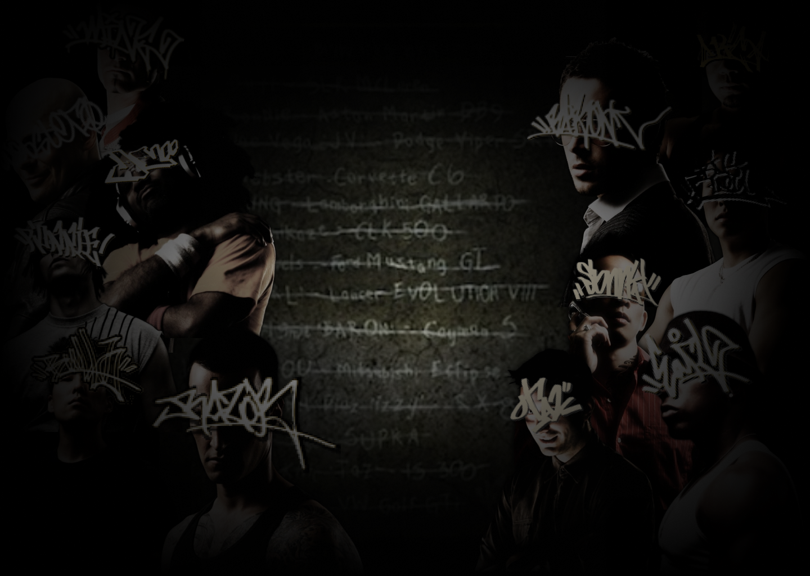

"The Blacklists"
The list of 15 wanted street racers in Rockport City that are of high priority for capture by the Rockport Police Department (RPD), organized by the amount of bounty placed upon them.
Razor, the main antagonist and de facto leader, sits atop the Blacklist after sabotaging the player's BMW M3 GTR (E46) and using it to reach the #1 position.
As part of the game, the player has to defeat each driver on the list before they can challenge Razor and become the "Most Wanted" street racer.
BLACKLIST PROFILE

Blacklist 15 : Sonny - Volkswagen Golf GTI
This here is Sonny. He's dumped a whole lot of cash into his car. That ride is worked so don't be fooled, it's a rocket. He does anything he can to get a hold of parts before they hit the streets.

Blacklist 14 : Taz - Lexus IS200
He comes after Ho Seun (Sonny), and he is #14 on the Blacklist, and he will challenge the player to two sprint races in hopes it will deter them from reaching his position in the Blacklist, but you win against him, proving his efforts useless and you potentially get his car in a pink slip. He precedes Victor who you challenge after him. He appears to have knowledge on evading police when the police nearly catch him out of sight during his introduction in his races.

Blacklist 13 : Vic - Toyota Supra MK4
He drives a dark blue Toyota Supra RZ (JZA80) which has been heavily modified. At first, he calls the Player personally to tell them to stay out of his way and that they will never reach him. Eventually The Player causes enough attention and he will challenge the Player to a race in which the Player wins, and his plan to keep them out of his way fantastically fails, and possibly hands over his Supra to the player.

Blacklist 12 : Izzy - Mazda RX-8
She is a mechanic and supposedly is part of a family business. She is part of the Blacklist racing group in Rockport City. She is challenged by the player after defeating Vic, and The Player ends up defeating her, with a possibility of her Mazda RX-8 being taken by the player

Blacklist 11 : Big Lou - Mitsubishi Eclipse
He is from South Korea and appears to have a huge history with women among Rockport City and is part of The Blacklist racing group in the same city. He is also a fairly good driver. He appears as number 11 on The Blacklist and he challenges the Player at one point when they reach that spot to prevent them from getting to Razor. He fails at this since The Player wins this race, also potentially surrendering his Mitsubishi Eclipse GT to the player.

Blacklist 10 : Baron - Porsche Cayman
This flake calls himself "Baron." He's a rich guy from the coast. He thinks garage custom is an excuse for being broke. As far as he's concerned, "if it's not brand, it's nothing." Go show 'im what home-grown rides can do.

Blacklist 9 : Earl - Mitsubishi Lancer Evolution 7
Being one of the many notable illegal racers in Rockport, Earl appears after the player defeat Baron, first seeing going full speed on the track before drifting right in front of the player. After showing off, he then drafts his spot right next to another racer, ready to fire his engine and finish the face. In order to meet him, the player require a pink slip.

Blacklist 8 : Jewels - Ford Mustang GT
She is best known for her car and fashion looks, and she knows how to drive fairly well. Rog even warns the Player to keep an eye out for her when racing against her due to her skills. She eventually challenges the Player and looses, and the Player even potentially gets her car

Blacklist 7 : Kaze - Mercedes Benz CLK500
She is a street racer who uses her skills at driving to cause property damage and destroy cops. She will eventually challenge the Player herself to in order to prevent them from getting her spot on the Blacklist, and she will loose and potentially lose her car if the Player gets her pink slip as a bonus.

Blacklist 6 : Ming - Lamborghini Gallardo
He appears and the Player will challenge him to a race in order to prevent them from reaching his spot on the Blacklist and getting their car back from Razor, which the Player wins all the races against him and potentially even gets his car via a pink slip in the way out.

Blacklist 5 : Webster - Chevrolet Corvette C6
He is into classic cars and his theme is, "Nine Thou" by Styles of Beyond. Once you challenge him, he will meet you at a gas station near Camden Beach and the Player will win against him in a Speed Trap race a sprint race running the same route. The Player will win against him and potentially win his car as a bonus.

Blacklist 4 : JV - Dodge Viper
He first appears screaming to the members of the Blacklist that the cops are arriving after Razor sabotages the player's vehicle and wins their car as a result. He later appears as number 4th on the Blacklist and he drives a heavily modified, green Dodge Viper SRT-10 (ZB) and he challenges the Player in an attempt to prevent them from reaching Razor on the Blacklist in which the Player wins, and may potentially give up his Viper to the player.

Blacklist 3 : Ronnie - Aston Martin DB9
He first appears when he meets The Player when they arrive to Rockport in a yellow Toyota Supra (A80) and challenges them to a race, which the Player wins. He then, with the help of Bull and under the orders of Razor, sabotages the player's BMW M3 GTR (E46) so Razor can win it for himself. He calls the player in between their mission to get their car back to mock them in order to prevent them from proceeding and the Player doesn't listen. Eventually, he now drives an Aston Martin DB9, which he received form his parents as a college gift, and challenges The Player again this time to prevent them from reaching Razor to get their car back and The Player wins, proving his efforts to be useless, also, it is made worse by his DB9 being potentially taken by the player.

Blacklist 2 : Bull - Mercedes-Benz SLR Mclaren
At first, he appears when The Player arrives to Rockport City and challenges the Player to a race in which the Player wins. Just then, the Player challenges Razor and he smugly appears alongside Ronnie suspiciously. Just then, after he and Ronnie were revealed to have made the Player's oil leak in their BMW, causing it to crash and for them to lose the race by defualt, and to Razor who takes it away, he mocks the Player many times with his fellow hencehmen before he has to leave before the police show up on the scene. Later, he challenges the Player again when they reach his spot to prevent them from reaching Razor to get their ride back, but this was proven to be a total mistake for him as the Player defeats him, with a potential chance the player takes his SLR away, and the entire Blacklist is arrested by Mia Townsend along with the Rockport Police Department while the Player escapes with their BMW finally back in their hands.

Blacklist 1 : Razor - BMW M3 GTR/ Ford Mustang GT
He is a notorious street racer who first drove a black 2005 Ford Mustang GT (S-197 I) with unique flame paint vinyl before winning the player's BMW M3 GTR ALMS (E46) via sabotage. After his defeat and arrest at the end of the Most Wanted game, he later had a black 2015 Ford Mustang GT and drove it in every Special Event during the Need For Speed: No Limits. The latter case implied that Razor either escaped prison or served his sentence and re-bought a Mustang similar to his old one. (If this is even canon to the Most Wanted/Carbon storyline.)He then later appears to have gotten out of prison in Need For Speed: Unbound, and travels to Lakeshore City when he learned the BMW M3 GTR he once stole and drove is there. (If this also is canon to the Most Wanted/Carbon storyline.)